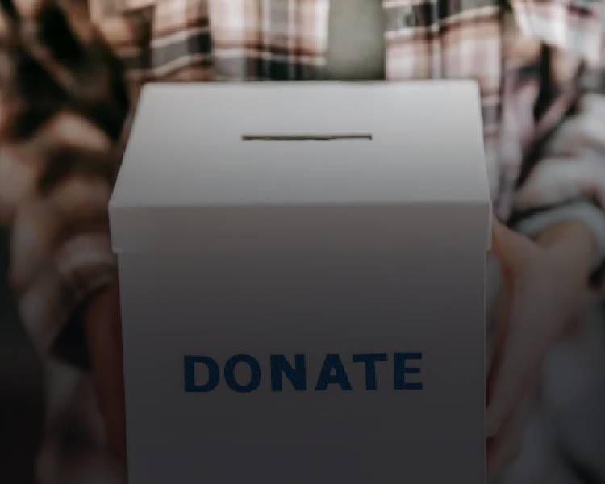

Landsindsamling

Landsindsamling
Landsindsamling
Status og data
Om frivilligarbejdet
Indsamling 2026
Indsamlingeen i år går til at hjælpe børn og voksne, der er ramt af krig og katestrofer i verdens brændpunkter. Mennesker der har mistet alt og har akut brug for mad, vand, lægehjælp osv. bla. i lande som Ukraine. Derudover går indsamlngen også til at støtte børn og voksne herhjemme, der er udsat enten eller både økonomsk og socialt.
Vil du være med til at samle ind til sårbare børn og vokse herhjemme og ude i verdenen? Uanset om du samler ind eller stiller op som frivillig, er du med til at hjælpe. Kom og være med!
Frivillig
Uanset hvilken opgave du tager ansvar for, er du med til at støtte børn både i Danmark og Verdenen.
Sted
Lakrids by Johan Bülow, Joe & the Juice, Thorco Shipping
Tidspunkt
Søndag den 4. oktober